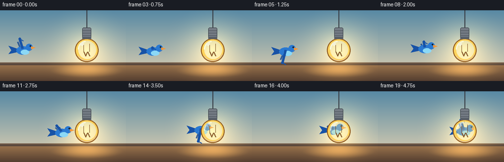
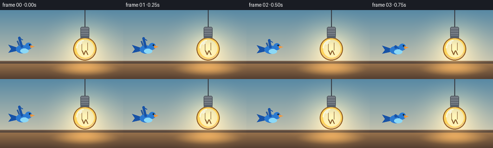

CODING AGENTS AS PIXEL WORLD MODELS
traex/Seed-2.1-Pro-0915 · dynamic_spatial_relationship_0041
点击播放 · 原生 RGB 像素
逐轮保存的候选
回放视频、检查图与代码变化。
每份候选均可单独播放。实际图片检查记录在下方工具轨迹中。
候选 01播放与检查图
点击播放 · 原生 RGB 像素


展开代码变化
--- 上一保存版本
+++ 本次保存版本
@@ -0,0 +1,204 @@
+from pathlib import Path
+import math
+
+import numpy as np
+from PIL import Image, ImageDraw
+
+import artifact_io
+
+
+WIDTH, HEIGHT = 256, 144
+FRAMES, FPS = 20, 4.0
+SCALE = 2
+SW, SH = WIDTH * SCALE, HEIGHT * SCALE
+
+BULB_X, BULB_Y = 176.0, 81.0
+START_X = 48.0
+
+
+def sc(value):
+ return int(round(value * SCALE))
+
+
+def point(x, y):
+ return (sc(x), sc(y))
+
+
+def vertical_gradient(height, width, top, bottom):
+ t = np.linspace(0.0, 1.0, height, dtype=np.float32)[:, None]
+ gradient = top * (1.0 - t) + bottom * t
+ return np.repeat(gradient[:, None, :], width, axis=1)
+
+
+def make_background():
+ wall_top = np.array([88, 137, 164], dtype=np.float32)
+ wall_bottom = np.array([231, 213, 178], dtype=np.float32)
+ image = vertical_gradient(SH, SW, wall_top, wall_bottom)
+
+ floor_top = np.array([151, 113, 75], dtype=np.float32)
+ floor_bottom = np.array([84, 62, 48], dtype=np.float32)
+ floor = vertical_gradient(SH - sc(112), SW, floor_top, floor_bottom)
+ image[sc(112):] = floor
+
+ image[sc(106):sc(112)] = np.array([91, 73, 61], dtype=np.float32)
+ image[sc(106):sc(108)] = np.array([119, 96, 77], dtype=np.float32)
+
+ yy, xx = np.mgrid[0:SH, 0:SW].astype(np.float32)
+
+ radius = sc(102)
+ dist = np.sqrt((xx - sc(BULB_X)) ** 2 + (yy - sc(BULB_Y)) ** 2) / radius
+ glow = np.clip(1.0 - dist, 0.0, 1.0) ** 2.0
+ warm = np.array([255, 185, 72], dtype=np.float32)
+ image += (glow * 0.42)[:, :, None] * warm
+
+ pool_x = (xx - sc(BULB_X)) / sc(76)
+ pool_y = (yy - sc(123)) / sc(15)
+ pool = np.clip(1.0 - (pool_x**2 + pool_y**2), 0.0, 1.0) ** 1.5
+ image += (pool * 0.22)[:, :, None] * warm
+
+ return Image.fromarray(np.clip(image, 0, 255).astype(np.uint8), "RGB").convert("RGBA")
+
+
+def make_bulb():
+ layer = Image.new("RGBA", (SW, SH), (0, 0, 0, 0))
+ draw = ImageDraw.Draw(layer)
+
+ # Cord and upper socket are part of the fixed foreground object.
+ draw.line([point(BULB_X, 0), point(BULB_X, 36)], fill=(58, 64, 72, 255), width=sc(2))
+
+ amber_outline = (149, 96, 35, 255)
+ glass = (255, 211, 92, 255)
+
+ draw.rounded_rectangle(
+ [sc(170), sc(45), sc(182), sc(67)],
+ radius=sc(2),
+ fill=glass,
+ )
+ draw.ellipse(
+ [sc(152), sc(57), sc(200), sc(105)],
+ fill=glass,
+ outline=amber_outline,
+ width=sc(2),
+ )
+
+ # Soft inner shading gives the glass a rounded, lit appearance.
+ draw.ellipse(
+ [sc(159), sc(62), sc(195), sc(99)],
+ fill=(255, 238, 158, 92),
+ )
+ draw.arc(
+ [sc(154), sc(59), sc(198), sc(103)],
+ start=25,
+ end=145,
+ fill=(181, 105, 35, 70),
+ width=sc(2),
+ )
+
+ filament = (126, 76, 31, 230)
+ draw.line([point(170, 84), point(174, 93), point(178, 84), point(182, 93)],
+ fill=filament, width=sc(2), joint="curve")
+ draw.line([point(170, 84), point(170, 68)], fill=filament, width=sc(1))
+ draw.line([point(182, 84), point(182, 68)], fill=filament, width=sc(1))
+
+ draw.arc(
+ [sc(158), sc(62), sc(190), sc(96)],
+ start=178,
+ end=268,
+ fill=(255, 255, 226, 190),
+ width=sc(3),
+ )
+ draw.ellipse([sc(163), sc(65), sc(170), sc(72)], fill=(255, 255, 238, 135))
+
+ draw.rounded_rectangle(
+ [sc(167), sc(35), sc(185), sc(58)],
+ radius=sc(3),
+ fill=(116, 123, 132, 255),
+ outline=(61, 67, 75, 255),
+ width=sc(1),
+ )
+ for y in (41, 46, 51):
+ draw.line([point(168, y), point(184, y)], fill=(76, 83, 92, 255), width=sc(1))
+ draw.rectangle([sc(167), sc(54), sc(185), sc(58)], fill=(88, 96, 105, 255))
+
+ return layer
+
+
+def draw_bird(frame, x, y, phase):
+ layer = Image.new("RGBA", (SW, SH), (0, 0, 0, 0))
+ draw = ImageDraw.Draw(layer)
+
+ ox, oy = sc(x), sc(y)
+
+ def local(points_):
+ return [(ox + sc(px), oy + sc(py)) for px, py in points_]
+
+ blue = (42, 121, 209, 255)
+ dark_blue = (23, 82, 166, 255)
+ belly = (139, 216, 246, 255)
+ orange = (244, 151, 58, 255)
+
+ # Tail and rear wing are drawn first so the body sits naturally over them.
+ draw.polygon(local([(-13, -3), (-31, -9), (-25, 0), (-31, 8), (-13, 4)]), fill=dark_blue)
+
+ rear_tip = (-12 + 3 * math.sin(phase), -17 * math.cos(phase))
+ draw.line(
+ [local([(-5, 0)])[0], local([rear_tip])[0]],
+ fill=(19, 70, 145, 210),
+ width=sc(3),
+ )
+
+ draw.ellipse([ox + sc(-15), oy + sc(-8), ox + sc(11), oy + sc(9)], fill=blue)
+ draw.ellipse([ox + sc(-6), oy + sc(-1), ox + sc(11), oy + sc(9)], fill=belly)
+ draw.ellipse([ox + sc(4), oy + sc(-13), ox + sc(18), oy + sc(1)], fill=blue)
+ draw.polygon(local([(15, -8), (24, -5), (15, -2)]), fill=orange)
+ draw.ellipse([ox + sc(12), oy + sc(-10), ox + sc(15), oy + sc(-7)], fill=(20, 30, 42, 255))
+
+ tip = (-8 + 5 * math.sin(phase), -23 * math.cos(phase))
+ shoulder = (-2, -3)
+ shoulder_p, tip_p = local([shoulder, tip])
+ draw.line([shoulder_p, tip_p], fill=dark_blue, width=sc(5))
+ draw.ellipse(
+ [tip_p[0] - sc(2.5), tip_p[1] - sc(2.5),
+ tip_p[0] + sc(2.5), tip_p[1] + sc(2.5)],
+ fill=dark_blue,
+ )
+ draw.line(
+ [tip_p, local([(tip[0] + 7, tip[1] + 4)])[0]],
+ fill=dark_blue,
+ width=sc(2),
+ )
+
+ frame.alpha_composite(layer)
+
+
+def ease_in_out(t):
+ return t * t * (3.0 - 2.0 * t)
+
+
+def generate_frames():
+ background = make_background()
+ bulb = make_bulb()
+ frames = []
+
+ for index in range(FRAMES):
+ t = index / (FRAMES - 1)
+ progress = ease_in_out(t)
+ x = START_X + (BULB_X - START_X) * progress
+ y = BULB_Y + 3.0 * math.sin(progress * math.tau * 2.0)
+ wing_phase = progress * math.tau * 3.0
+
+ frame = background.copy()
+ draw_bird(frame, x, y, wing_phase)
+ frame.alpha_composite(bulb)
+
+ frame = frame.convert("RGB").resize((WIDTH, HEIGHT), Image.Resampling.LANCZOS)
+ frames.append(np.asarray(frame, dtype=np.uint8))
+
+ return np.stack(frames)
+
+
+if __name__ == "__main__":
+ output = generate_frames()
+ case_dir = Path(__file__).resolve().parent
+ artifact_io.save(output, case_dir)
+ print(f"Saved {FRAMES} RGB frames ({WIDTH}x{HEIGHT}) to {case_dir}")
可观测工具轨迹
实际执行的命令与返回图片。
命令 1exit 0
/bin/bash -lc 'cat prompt.txt GENERATION_RULES.md task_spec.json'
命令 2exit 0
/bin/bash -lc "ls -la && rg --files -g '"'!*'"' | head -50 && python - <<'PY'
import sys, os
print(sys.version)
try:
import numpy, PIL
print('numpy', numpy.__version__, 'PIL ok')
except Exception as e: print(e)
try:
import artifact_io
print('artifact_io', artifact_io, getattr(artifact_io,'__file__',None))
except Exception as e: print('artifact_io import error:',e)
PY"命令 3exit 0
/bin/bash -lc "sed -n '1,240p' artifact_io.py"
命令 4exit 0
/bin/bash -lc 'python generate.py'
保存候选 1 份；完成命令 4 次；可验证图片返回 0 张。原始 API 响应与完整日志保留在本地。